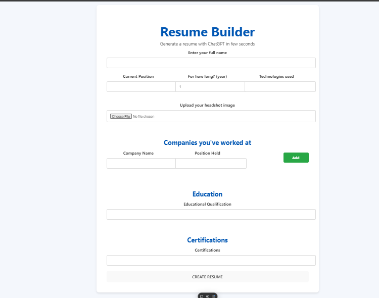
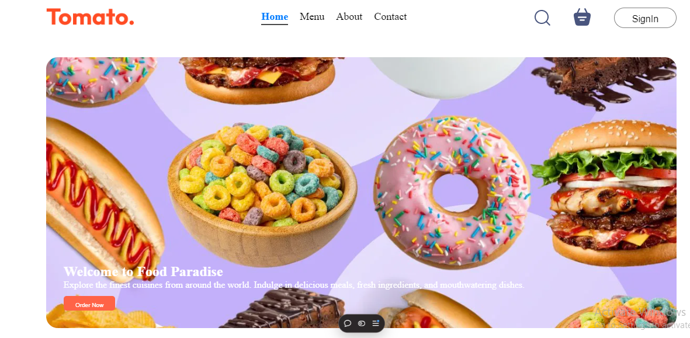
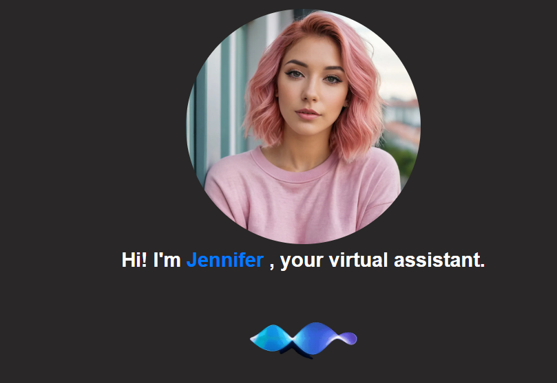

Nitin Goley - MERN Stack Developer
Proficient in MERN stack, React Native, and Golang with hands-on experience in building scalable web applications and AI-powered tools.
Skills
- MERN Stack (MongoDB, Express.js, React.js, Node.js)
- React Native
- Golang
- JavaScript, TypeScript
- REST APIs, GraphQL
- Version Control: Git, GitHub
- Cloud: Vercel
Projects
1. AI Resume Builder
Description: Built an AI-powered resume builder that generates professional resumes based on user inputs, using machine learning for ATS optimization.
Technologies: React.js, Node.js, Express.js, MongoDB, OpenAI API
Key Features:
- Automated resume generation with customizable templates.
- Optimized for ATS parsing and keyword optimization using machine learning.
- Real-time preview and PDF download options.
- Secure user authentication with JWT.
GitHub: View on GitHub
2. Food Delivery Web Application
Description: Developed a full-stack food delivery platform with browsing, cart management, and secure payments.
Technologies: React.js, Node.js, Express.js, MongoDB, Stripe API
Key Features:
- User authentication with JWT and role-based access.
- Payment integration using Stripe API.
- Product filtering, sorting, and search functionality.
GitHub: View on GitHub
3. Advanced Authentication System

Description: Built an advanced authentication system with MFA, password encryption, and account recovery via email.
Technologies: React.js, Node.js, Express.js, MongoDB
Key Features:
- Multi-factor authentication (MFA) for enhanced security.
- JWT-based session management.
- Account recovery with email verification.
GitHub: View on GitHub
4. Virtual Assistant (Jennifer)
Description: Developed a virtual assistant powered by AI that can respond to user queries and perform actions based on third-party APIs, including weather updates, news fetching, and more.
Technologies: Node.js, MongoDB, Dialogflow, Express.js
Key Features:
- Integrated voice commands and text-based input handling for diverse user interactions.
- Connected APIs for weather, news, and more, making the assistant versatile.
- Optimized performance for real-time response and processing using efficient database queries.
GitHub: View on GitHub
5.Food Recipe Web App
Description: Created a full-stack web application to explore, add, and manage food recipes, allowing users to discover various cuisines and cooking methods.
Technologies: PostgreSQL, Express.js, React.js, Node.js (PERN Stack)
Key Features:
- User-friendly recipe search and filtering options.
- Recipe submission and editing features.
- Database integration with PostgreSQL for recipe storage and management.
GitHub: View on GitHub